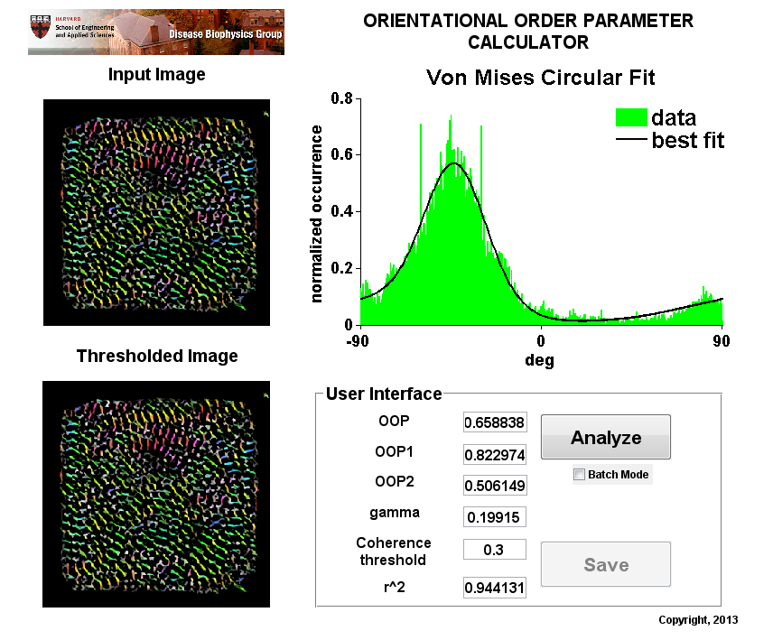

Contents
- Orientational Order Parameter (OOP) Calculator
- user-defined handles
- SCRIPT EXECUTION
- OPEN IMAGE
- Input thresholds
- if the batch mode is selected, only save the dataset array
- otherwise save the images
- HELPER FUNCTION
- input data manipulation
- circular statistics: OOPr
- Von Mises mixture best fitting procedure
- figure 2
Orientational Order Parameter (OOP) Calculator
Beta version 1.0 date: 4/26/2013
The following code is part of the development of COBRA: the Cytoskeletal Organization Benchmark and Representation Assay.
written by: Francesco S. Pasqualini
DISEASE BIOPHYSICS GROUP CONFIDENTIAL Unpublished Copyright (c) 2013, DISEASE BIOPHYSICS GROUP, All Rights Reserved.
NOTICE: All information contained herein is, and remains the property of the DISEASE BIOPHYSICS GROUP. The intellectual and technical concepts contained herein are proprietary to the DISEASE BIOPHYSICS GROUP and may be covered by U.S. and Foreign Patents, patents in process, and are protected by trade secret or copyright law. Dissemination of this information or reproduction of this material is strictly forbidden unless prior written permission is obtained from the DISEASE BIOPHYSICS GROUP. Access to the source code contained herein is hereby forbidden to anyone except current DISEASE BIOPHYSICS GROUP employees, managers or contractors who have executed Confidentiality and Non-disclosure agreements explicitly covering such access.
The copyright notice above does not evidence any actual or intended publication or disclosure of this source code, which includes information that is confidential and/or proprietary, and is a trade secret, of the DISEASE BIOPHYSICS GROUP. ANY REPRODUCTION, MODIFICATION, DISTRIBUTION, PUBLIC PERFORMANCE, OR PUBLIC DISPLAY OF OR THROUGH USE OF THIS SOURCE CODE WITHOUT THE EXPRESS WRITTEN CONSENT OF COMPANY IS STRICTLY PROHIBITED, AND IN VIOLATION OF APPLICABLE LAWS AND INTERNATIONAL TREATIES. THE RECEIPT OR POSSESSION OF THIS SOURCE CODE AND/OR RELATED INFORMATION DOES NOT CONVEY OR IMPLY ANY RIGHTS TO REPRODUCE, DISCLOSE OR DISTRIBUTE ITS CONTENTS, OR TO MANUFACTURE, USE, OR SELL ANYTHING THAT IT MAY DESCRIBE, IN WHOLE OR IN PART.
function varargout = OOP_Ver1b0(varargin) % Begin initialization code - DO NOT EDIT gui_Singleton = 1; gui_State = struct('gui_Name', mfilename, ... 'gui_Singleton', gui_Singleton, ... 'gui_OpeningFcn', @OOP_Ver1b0_OpeningFcn, ... 'gui_OutputFcn', @OOP_Ver1b0_OutputFcn, ... 'gui_LayoutFcn', [] , ... 'gui_Callback', []); if nargin && ischar(varargin{1}) gui_State.gui_Callback = str2func(varargin{1}); end if nargout [varargout{1:nargout}] = gui_mainfcn(gui_State, varargin{:}); else gui_mainfcn(gui_State, varargin{:}); end % End initialization code - DO NOT EDIT % load dependencies restoredefaultpath [PATHSTR,NAME,EXT] = fileparts(pwd); addpath(genpath([PATHSTR,... '\Dependencies'])); % --- Executes just before OOP_Ver1b0 is made visible. function OOP_Ver1b0_OpeningFcn(hObject, eventdata, handles, varargin)
% This function has no output args, see OutputFcn. % hObject handle to figure % eventdata reserved - to be defined in a future version of MATLAB % handles structure with handles and user data (see GUIDATA) % varargin command line arguments to OOP_Ver1b0 (see VARARGIN) % Choose default command line output for OOP_Ver1b0 handles.output = hObject;
user-defined handles
handles.TotalDataset = []; handles.Dataset = []; handles.filename = []; % store the name of the file being analyzed handles.pathname = []; % store the name of the folder from which the files are taken handles.savename = []; % store the name of the text file in which all the data are saved handles.OOPopt = []; % store all the user-defined options for the OOP calculation axes(handles.dBGLogo); imshow(imread('DBGHeader.PNG'),[]) set(handles.pushbutton1,'BackgroundColor',[240 240 240]/255,'string',... 'Analyze','enable','on'); set(handles.pushbutton2,'Enable','off') % Update handles structure guidata(hObject, handles); % UIWAIT makes OOP_Ver1b0 wait for user response (see UIRESUME) % uiwait(handles.figure1); % --- Outputs from this function are returned to the command line.

function varargout = OOP_Ver1b0_OutputFcn(hObject, eventdata, handles) % varargout cell array for returning output args (see VARARGOUT); % hObject handle to figure % eventdata reserved - to be defined in a future version of MATLAB % handles structure with handles and user data (see GUIDATA) % Get default command line output from handles structure varargout{1} = handles.output; % --- Executes during object creation, after setting all properties. function edit7_CreateFcn(hObject, eventdata, handles) % hObject handle to edit7 (see GCBO) % eventdata reserved - to be defined in a future version of MATLAB % handles empty - handles not created until after all CreateFcns called % Hint: edit controls usually have a white background on Windows. % See ISPC and COMPUTER. if ispc && isequal(get(hObject,'BackgroundColor'), get(0,'defaultUicontrolBackgroundColor')) set(hObject,'BackgroundColor','white'); end % --- Executes during object creation, after setting all properties. function edit8_CreateFcn(hObject, eventdata, handles) % hObject handle to edit8 (see GCBO) % eventdata reserved - to be defined in a future version of MATLAB % handles empty - handles not created until after all CreateFcns called % Hint: edit controls usually have a white background on Windows. % See ISPC and COMPUTER. if ispc && isequal(get(hObject,'BackgroundColor'), get(0,'defaultUicontrolBackgroundColor')) set(hObject,'BackgroundColor','white'); end % --- Executes during object creation, after setting all properties. function edit9_CreateFcn(hObject, eventdata, handles) % hObject handle to edit9 (see GCBO) % eventdata reserved - to be defined in a future version of MATLAB % handles empty - handles not created until after all CreateFcns called % Hint: edit controls usually have a white background on Windows. % See ISPC and COMPUTER. if ispc && isequal(get(hObject,'BackgroundColor'), get(0,'defaultUicontrolBackgroundColor')) set(hObject,'BackgroundColor','white'); end % --- Executes during object creation, after setting all properties. function edit10_CreateFcn(hObject, eventdata, handles) % hObject handle to edit10 (see GCBO) % eventdata reserved - to be defined in a future version of MATLAB % handles empty - handles not created until after all CreateFcns called % Hint: edit controls usually have a white background on Windows. % See ISPC and COMPUTER. if ispc && isequal(get(hObject,'BackgroundColor'), get(0,'defaultUicontrolBackgroundColor')) set(hObject,'BackgroundColor','white'); end % --- Executes during object creation, after setting all properties. function edit11_CreateFcn(hObject, eventdata, handles) % hObject handle to edit11 (see GCBO) % eventdata reserved - to be defined in a future version of MATLAB % handles empty - handles not created until after all CreateFcns called % Hint: edit controls usually have a white background on Windows. % See ISPC and COMPUTER. if ispc && isequal(get(hObject,'BackgroundColor'), get(0,'defaultUicontrolBackgroundColor')) set(hObject,'BackgroundColor','white'); end % --- Executes during object creation, after setting all properties. function edit12_CreateFcn(hObject, eventdata, handles)
% hObject handle to edit12 (see GCBO) % eventdata reserved - to be defined in a future version of MATLAB % handles empty - handles not created until after all CreateFcns called % Hint: edit controls usually have a white background on Windows. % See ISPC and COMPUTER. if ispc && isequal(get(hObject,'BackgroundColor'), get(0,'defaultUicontrolBackgroundColor')) set(hObject,'BackgroundColor','white'); end
Warning: Duplicate directory name: C:\Program Files\MATLAB\R2012a\toolbox\shared\hdlshared. Warning: Duplicate directory name: C:\Program Files\MATLAB\R2012a\toolbox\shared\hdlshared. Warning: Duplicate directory name: C:\Program Files\MATLAB\R2012a\toolbox\shared\hdlshared. Warning: Duplicate directory name: C:\Program Files\MATLAB\R2012a\toolbox\shared\hdlshared. Warning: Duplicate directory name: C:\Program Files\MATLAB\R2012a\toolbox\shared\hdlshared. Warning: Duplicate directory name: C:\Program Files\MATLAB\R2012a\toolbox\shared\hdlshared. Warning: Duplicate directory name: C:\Program Files\MATLAB\R2012a\toolbox\shared\hdlshared.
SCRIPT EXECUTION
% --- Executes on button press in pushbutton1.
function pushbutton1_Callback(hObject, eventdata, handles)
% hObject handle to pushbutton1 (see GCBO) % eventdata reserved - to be defined in a future version of MATLAB % handles structure with handles and user data (see GUIDATA) clc % arrayfun(@cla,findall(0,'type','axes')) clear OOPsOpt imOutput set(handles.pushbutton1,'BackgroundColor','r','string',... 'Analyzing','enable','off'); set(handles.pushbutton2,'Enable','off') guidata(hObject, handles); if ~isempty(handles.Dataset) handles = rmfield(handles,'Dataset'); handles = rmfield(handles,'TotalDataset'); end
OPEN IMAGE
Input thresholds
prompt = {'Intensity:','Coherency:'};
dlg_title = 'Specify orientation inclusion threshold';
num_lines = 1;
def = {'0.1','0.3'};
UserSelections = inputdlg(prompt,dlg_title,num_lines,def);
if isempty(UserSelections)
set(handles.pushbutton1,'BackgroundColor',[240 240 240]/255,'string',...
'Analyze','enable','on');
end
UserSelections = str2double(UserSelections);
OOPsOpt.thValues = UserSelections(1);
OOPsOpt.thCoherency = UserSelections(2);
if get(handles.checkbox1, 'Value')
ListOfFiles = SelectFolder(hObject, eventdata, handles);
NumFiles = length(ListOfFiles);
for idx1 = 1:NumFiles
filenames{idx1} = ListOfFiles(idx1).name
display([filenames{idx1} ])
[PATHSTR,NAME,EXT] = fileparts(filenames{idx1});
handles.filename = NAME;
handles.pathname = PATHSTR;
guidata(hObject, handles);
imOutput = AnalyzeSingleImage(filenames{idx1},OOPsOpt,hObject,...
eventdata, handles);
axes(handles.axes1)
imshow(imOutput.input.im,[])
axes(handles.axes2)
imshow(hsv2rgb(imOutput.output.image2show_hard),[])
imOutput.output.ExtractedMetrics(1,7) = OOPsOpt.thCoherency;
VariableNames = {'filename','OOP','OOP1','OOP2','gamma','th','rsq'};
Data = {handles.filename,...
imOutput.output.ExtractedMetrics(1),...
imOutput.output.ExtractedMetrics(2),...
imOutput.output.ExtractedMetrics(3),...
1-imOutput.output.ExtractedMetrics(4) - ...
imOutput.output.ExtractedMetrics(5),...
imOutput.output.ExtractedMetrics(7),...
imOutput.output.ExtractedMetrics(6),...
};
handles.Dataset = dataset({Data, VariableNames{:}});
% handles.Dataset.filename = handles.filename;
if idx1 == 1
handles.TotalDataset = handles.Dataset;
else
handles.TotalDataset = cat(1, handles.Dataset,...
handles.TotalDataset);
end
set(handles.edit1,'String',imOutput.output.ExtractedMetrics(1));
set(handles.edit2,'String',imOutput.output.ExtractedMetrics(2));
set(handles.edit3,'String',imOutput.output.ExtractedMetrics(3));
set(handles.edit4,'String',1-imOutput.output.ExtractedMetrics(4)-...
imOutput.output.ExtractedMetrics(5))
set(handles.edit5,'String',imOutput.output.ExtractedMetrics(7))
set(handles.edit6,'String',imOutput.output.ExtractedMetrics(6))
guidata(hObject, handles);
end
else
[PATHSTR,NAME,EXT] = fileparts(pwd);
imageFolder = [PATHSTR,...
'\DemoImages\OOP\pCM\*.tif'];
% imageFolder = ['C:\'];
[filename, pathname] = uigetfile(...
imageFolder,...
'Pick a TIFF image');
if isequal(filename,0) || isequal(pathname,0)
disp('User pressed cancel')
set(handles.pushbutton1,'BackgroundColor',[240 240 240]/255,'string',...
'Analyze','enable','on');
return
else
disp(['User selected ', fullfile(pathname, filename)])
end
handles.filename = filename;
handles.pathname = pathname;
guidata(hObject, handles);
imOutput = AnalyzeSingleImage([pathname, filename],OOPsOpt,hObject,...
eventdata, handles);
axes(handles.axes1)
imshow(imOutput.input.im,[])
axes(handles.axes2)
imshow(hsv2rgb(imOutput.output.image2show_hard),[])
imOutput.output.ExtractedMetrics(1,7) = OOPsOpt.thCoherency;
guidata(hObject, handles);
set(handles.edit1,'String',imOutput.output.ExtractedMetrics(1));
set(handles.edit2,'String',imOutput.output.ExtractedMetrics(2));
set(handles.edit3,'String',imOutput.output.ExtractedMetrics(3));
set(handles.edit4,'String',1-imOutput.output.ExtractedMetrics(4)-...
imOutput.output.ExtractedMetrics(5))
set(handles.edit5,'String',imOutput.output.ExtractedMetrics(7))
set(handles.edit6,'String',imOutput.output.ExtractedMetrics(6))
end
set(handles.pushbutton1,'BackgroundColor',[240 240 240]/255,'string',...
'Analyze','enable','on');
set(handles.pushbutton2,'Enable','on')
guidata(hObject, handles);
guidata(hObject, handles);
% --- Executes on button press in pushbutton2.
function pushbutton2_Callback(hObject, eventdata, handles)
% hObject handle to pushbutton2 (see GCBO) % eventdata reserved - to be defined in a future version of MATLAB % handles structure with handles and user data (see GUIDATA) % this pushbotton triggers the saving routines guidata(hObject, handles); set(handles.pushbutton1,'Enable','off') set(handles.pushbutton2,'BackgroundColor','r','string',... 'Saving','enable','on');
if the batch mode is selected, only save the dataset array
if get(handles.checkbox1, 'Value')
% handles.TotalDataset = handles.TotalDataset(:,[end,1:end]); export(handles.TotalDataset,'file',... [handles.pathname, '\', 'FolderSummary.csv'],'Delimiter',',') pause(1)
otherwise save the images
else % take an editable snapshot of the GUI saveas(gcbf,[handles.pathname,handles.filename,'.eps'],'psc2') % export into a single EPS file the histogram and fitting figTemp = figure('visible','off'); newax = copyobj(handles.axes3,figTemp); saveas(figTemp,[handles.pathname,handles.filename,'_1D.eps'],'psc2') close(figTemp) % export into a single EPS file the thresholded image figTemp = figure('visible','off'); newax = copyobj(handles.axes2,figTemp); saveas(figTemp,[handles.pathname,handles.filename,'_2D.eps'],'psc2') end set(handles.pushbutton1,'Enable','on') set(handles.pushbutton2,'BackgroundColor',[240, 240, 240]/255,'string',... 'Save','enable','off'); guidata(hObject, handles); %
HELPER FUNCTION
function imOutput = AnalyzeSingleImage(filename,OOPsOpt, hObject, eventdata, handles) imOutput.input = imageSelection(filename,hObject, eventdata, handles); imOutput.output = exectuteAnalysisSingleImage(imOutput.input.im,OOPsOpt,... hObject, eventdata, handles); function imOutput = imageSelection(filename,hObject, eventdata, handles) imOutput.im = imread(filename); function ListOfFiles = SelectFolder(hObject, eventdata, handles) [PATHSTR,NAME,EXT] = fileparts(pwd); imageFolder = [PATHSTR,... '\DemoImages\OOP\pCM']; d = uigetdir(imageFolder); if isequal(d,0) || isequal(d,0) disp('User pressed cancel') set(handles.pushbutton1,'BackgroundColor',[240 240 240]/255,'string',... 'Analyze','enable','on'); return end ListOfFiles = dir(fullfile(d, '*.tif')); for idx1 = 1:length(ListOfFiles) ListOfFiles(idx1).name = [d,'\',ListOfFiles(idx1).name ]; end function output = ... exectuteAnalysisSingleImage(im,OOPsOpt,hObject, eventdata, handles)
im_RGB = im; % general use vectors % interval for circular statistics operations intervalRad = linspace(-pi,pi,360); % starting point for optimization procedure % startingPoints = [0.1, deg2rad(20),deg2rad(20),0,pi,.1]; startingPoints = [0.1, 5,5,deg2rad(0),deg2rad(90),.1]; NumOrientations = 180; theta = floor(linspace(-90,89,NumOrientations)); ExtractedMetrics = zeros(1,7); % convert in hue, saturation and value format im_HSV = rgb2hsv(im_RGB); image2show = zeros(size(im_HSV)); % extract Orientations Orientation = im_HSV(:,:,1); % extract Coherency Coherency = im_HSV(:,:,2); % extract Gray Values for the original image Values = im_HSV(:,:,3); % apply defined thresholds NonBackgroundOrientations = Orientation(Values>OOPsOpt.thValues); HighConfidenceEdgeOrientations = Orientation(Values>OOPsOpt.thValues &... Coherency>=(OOPsOpt.thCoherency*max(Coherency(:)))); output.image2show_hard(:,:,1) = Orientation; output.image2show_hard(:,:,2) = Coherency.*(Coherency>=... (OOPsOpt.thCoherency*max(Coherency(:)))); output.image2show_hard(:,:,3) = Values.*(Values>=OOPsOpt.thValues); % % axes(handles.axes2) % imshow(hsv2rgb(image2show_hard),[]) % axes(handles.axes3) output.ExtractedMetrics(1,1:6) = calculateOOPs(HighConfidenceEdgeOrientations,... intervalRad,startingPoints,hObject, eventdata, handles);
function output = ... calculateOOPs(y,interval_rad,startingPoints,hObject, eventdata, handles)
fsp360_180deg = @(x) mod((x/2)+90,180)-90; fsp_hue_360rad = @(x) mod(x*2*pi,2*pi)-pi; fsp360_180rad = @(x) mod((x/2)+pi/2,pi)-pi/2;
input data manipulation
if(max(y(:))<=1 & min(y(:))>=0) y = fsp_hue_360rad(y); end [counts_angles] = hist(y,interval_rad); count_angles_density = counts_angles/trapz(interval_rad,counts_angles); %count_angles_density = counts_angles/sum(counts_angles); sumCounts = trapz(interval_rad, count_angles_density);
circular statistics: OOPr
Srad = circ_stats(y); mean_angle = Srad.mean; stdDev = Srad.std; OOPr = circ_r(y);
Von Mises mixture best fitting procedure
use parameter estimation function from circular stat toolbox so uses the circular representation (vector y not y1)
try
[cf_, gof_]= Trimodal_VonMisesFit(interval_rad,count_angles_density,...
startingPoints);
cfvalues = coeffvalues(cf_);
fhat = cfvalues(1);
khat1 = cfvalues(2);
khat2 = abs(cfvalues(3));
mhat1 = cfvalues(4);
mhat2 = ((-1)^(cfvalues(3)<0).*cfvalues(5));
ghat = cfvalues(6);
OOP1 = circ_r(circ_vmrnd(mhat1,khat1,1e3));
OOP2 = circ_r(circ_vmrnd(mhat2,khat2,1e3));
gof = gof_.rsquare;
output = [OOPr, OOP1, OOP2,fhat,ghat,gof];
figure 2
plot the values of all OOP indicators, as well as the graph of OOP vs spread paraneter k and circular standard deviation
bestFit_VM = ghat*circ_vmpdf(interval_rad,0,0)+... fhat*circ_vmpdf(interval_rad,mhat1,khat1)+... (1-fhat-ghat)*circ_vmpdf(interval_rad,mhat2,khat2); AreaFit = trapz(interval_rad,bestFit_VM); bar(interval_rad,count_angles_density,'EdgeColor','g','FaceColor','g') % plot(interval_rad,count_angles_density,'g') hold on plot(interval_rad,bestFit_VM,'k','LineWidth',2) % bar(interval_rad,bestFit_VM,'EdgeColor','g','FaceColor','g','alpha',0.6) hold off legend({'data', 'best fit'},'FontSize',14,'FontWeight','bold'), legend boxoff title('Von Mises Circular Fit','FontSize',18,'FontWeight','bold') xlabel('deg','FontSize',14,'FontWeight','bold') ylabel('normalized occurrence','FontSize',14,'FontWeight','bold') set(handles.axes3,'Box','off','TickDir','out') set(handles.axes3,'FontSize',14,'FontWeight','bold') set(handles.axes3,'Xlim',[-pi, pi],'Xtick',[-3.14,0,3.14],'XTickLabel',{'-90','0','90'});
catch err output = [OOPr, zeros(1,5)]; display(['could not perform fitting:']); getReport(err, 'extended') end
function [cf_, gof_] = ... Trimodal_VonMisesFit(interval_rad,count_angles_density,startingPoints) % --- Plot data that was originally in data set "count_angles_density vs. interval_rad" interval_rad = interval_rad(:); count_angles_density = count_angles_density(:); % % --- Create fit "fit 1" ok_ = isfinite(interval_rad) & isfinite(count_angles_density); % if ~all( ok_ ) % warning( 'GenerateMFile:IgnoringNansAndInfs',... % 'Ignoring NaNs and Infs in data.' ); % end st = startingPoints; opt = fitoptions('Method','NonlinearLeastSquares',... 'Lower',[0 1 1 deg2rad(-90) deg2rad(91) 0],... 'Upper',[1 100 100 deg2rad(90) deg2rad(180) 1],... 'StartPoint',startingPoints); % opt = fitoptions('Method','NonlinearLeastSquares',... % 'StartPoint',startingPoints); ft_ = fittype(['0*circ_vmpdf(x,0,0) + f*circ_vmpdf(x,mhat1,khat1)+'... '(1-f-g)*circ_vmpdf(x,mhat2,khat2)'],... 'dependent',{'y'},'independent',{'x'},... 'coefficients',{'f', 'khat1', 'khat2', 'mhat1', 'mhat2','g'},'options',opt); [cf_, gof_] = fit(interval_rad(ok_),count_angles_density(ok_),ft_);